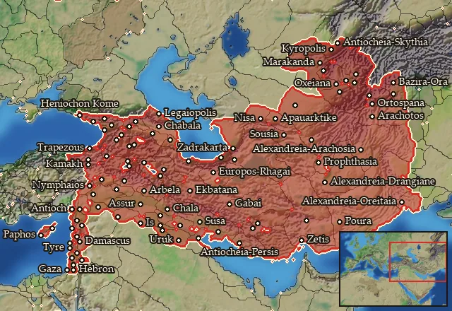
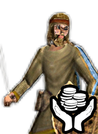
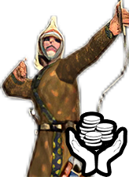

Asia
← all mercenary pools · wiki index
Mercenary pool: 4 units for hire in 96 regions.

Mercenaries
| Unit | Cost (dn) | Experience | At start | Most in pool | Added per turn | Who can hire | |
|---|---|---|---|---|---|---|---|
| Mercenary Asian Light Spearmen | 3,050 | 0 | 1 | 2 | 0.2165–0.4329 | Any faction | |
 | Mercenary Asian Slingers | 3,336 | 0 | 1 | 2 | 0.1979–0.3958 | Any faction |
| Mercenary Asian Skirmishers | 2,255 | 0 | 1 | 2 | 0.2928–0.5855 | Any faction | |
 | Mercenary Asian Archers | 3,287 | 0 | 1 | 2 | 0.2009–0.4017 | Any faction |
Regions (96)
Albania · Anaouon · Anatolike Baktriane · Anatolike Sogdiane · Ankobaritis · Ano Persia · Apamene · Apauarktikene · Apolloniatis · Arachosia · Arbelitis · Ariane · Arwad · Assakenia · Assyria · Babylonia · Baktriane · Basoropeda · Boreia Hyrkania · Chalonitis · Charakene · Chorzene · Damashq · Darapsia · Dekapolis · Drangiane · Elymais · Emesene · Eoritia · Gandaritis · Gazaia · Gedrosia · Gordyene · Hellenike Makronia · Heniochia · Hesperos Ariane · Hyrkania · Iaxartes · Iberia · Idoumaia · Ioudaia · Kadousia · Kambysene · Kapisene · Karmania · Kaspiane · Khalab · Kolchis · Kommagene · Koraxia · Kyreschata · Legaia · Lychnitis · Mardyenia · Margiane · Massyas · Matiane · Media · Megale Armenia · Mesopotamia · Mikra Armenia · Mossynoikia · Mygdonia-Syria · Nikephoreia · Nisaia · Notia Karmania · Orchoe · Oreitaia · Osrhoene · Oxos · Paphia · Paropamisadai · Parthia · Pasargadaia · Pedias Atropatene · Persia · Phasis · Rabat Xaman · Rhagiane · Sakasene · Salamina · Shamerayin · Sittakene · Skythenia · Soanaia · Sogdiane · Sophene · Sousiane · Syria · Taochia · Taokene · Taronitis · Tingene · Tracheia Atropatene · Zidun · Zur